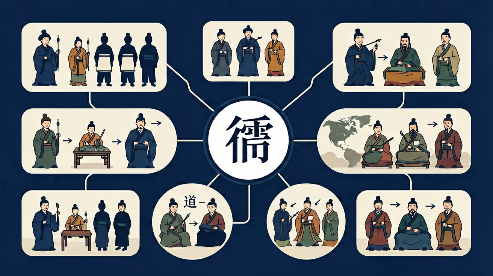

通过了解春秋战国时期的经济发展和政治变动，理解战国时期变法运动的必然性；了解老子、孔子学说；通过孟子、荀子、庄子等了解“百家争鸣”的局面及其意义。

🎯 能说出儒道法佛四家的核心主张关键词
🎯 能分析'仁政''无为''法治''慈悲'背后的社会背景差异
🎯 能判断历史材料中体现的学派思想特征
❓ 为什么儒家说要'克己复礼'但法家却主张变法？
❓ 道家说的'无为而治'是不是让统治者偷懒？
❓ 佛教讲'四大皆空'那为什么还要拜佛？
学完这一课，这些问题你都能自信地回答。
韩非子'不期修古，不法常可'反映哪家思想？
孟子'民贵君轻'主张最接近现代哪个理念？
古代思想文化（儒/道/法/佛）是高中历史的重要内容。通过了解春秋战国时期的经济发展和政治变动，理解战国时期变法运动的必然性；了解老子、孔子学说；通过孟子、荀子、庄子等了解“百家争鸣”的局面及其意义。
了解并认同中华优秀传统文化、革命文化、社会主义先进文化，了解中国各个历史时期的英雄人物，传承民族气节、崇尚英雄气概，认识中华文明的历史价值和现实意义。
点击时代/图层按钮切换地图；悬停边界，点击城市标记查看说明。
复制提示词到 AI 学伴，生成「古代思想文化（儒/道/法/佛）」的时间轴或事件提纲；也可以上传你手绘的示意图，请 AI 学伴点评。
复制后可粘贴到 AI 学伴继续对话。
关于诸子百家，正确的是：
选取校园生活场景，分析适用学派思想
儒家重伦理秩序与教化，道家重自然无为，法家重法术势与集权，佛教传入后逐渐中国化。历代常以儒为主、兼容道法佛，形成复合的文化结构，影响政治治理、士人精神与社会习俗。
儒：仁礼；道：道与自然；法：法势术；佛：因果解脱。比较其对政治（入世/出世、德治/法治）与人生态度的不同，举朝代政策为例。
常见误区：常见误区是把四家完全对立，看不到历史上的互补与融合。
主张“无为而治”、批判礼乐束缚的主要是？
1. 儒家"中庸"与AI伦理：谷歌DeepMind在2023年机器人伦理设计中，采用"执两用中"原则处理自主性边界问题。当机器人面对医疗急救时，既不完全自主决策（可能出错）也不完全被动等待（延误时机），而是设计出68%自主权+32%人工复核的混合模式，这正是《中庸》"致中和"的现代科技转化。
2. 道家思想与生态修复：都江堰水利工程运用"道法自然"原理，通过鱼嘴分水、飞沙堰排沙等设计实现自动调节。2022年黄河三角洲湿地修复中，工程师参照《庄子·秋水》"因其固然"思想，放弃混凝土堤岸，改用芦苇等本土植物缓流促淤，使鸟类栖息地增加了43%。
3. 法家思维与公司管理：字节跳动采用"循名责实"的OKR考核体系，每个季度对6000+项目进行"效功爵制"式评估。2021年组织架构调整时，参考《韩非子·定法》"术者，因任而授官"原则，将TikTok算法团队重组为17个独立核算的"作战单元"，使迭代速度提升2.7倍。
1. 问题：佛教"缘起性空"与量子纠缠现象有何本质区别？引导：比较龙树《中论》"众因缘生法"与量子力学波函数坍缩。注意公元2世纪印度佛教的"空"（śūnyatā）是哲学本体论概念，而海森堡测不准原理属于实证科学范畴。可考察大乘佛教"二谛说"中"世俗谛"与"胜义谛"的分野。
2. 问题：为何法家"以刑去刑"的理想在秦朝未能实现？引导：分析《商君书·画策》"刑重而必得"与睡虎地秦简《法律答问》的实际案例偏差。注意商鞅设想的"刑用于将过"（预防犯罪）与秦后期"劓鼻盈车"的酷吏政治差异。可对比汉武帝时期"春秋决狱"的儒家化修正。
从春秋战国的礼崩乐坏出发，诸子面对"如何重建秩序"这一核心命题展开思想交锋。儒家孔子以"仁"重构周礼内核，在《论语》中提出"为政以德"的伦理政治观，孟子更将性善论发展为"民贵君轻"的民本思想。与之相对，老子在《道德经》中以"道生一"的宇宙论解构人为规范，庄子用"坐忘"实现精神超越，但黄老之学又将其转化为"无为而治"的治国术。法家则彻底转向现实主义，商鞅"徙木立信"确立法律权威，韩非整合"法、术、势"三要素，秦简《为吏之道》显示其如何细化为行政规程。佛教传入后经历格义阶段，至隋唐形成天台宗"一念三千"等本土化理论。四家思想在斗争中融合：董仲舒用阴阳五行统合儒法，魏晋玄学以道释儒，宋明理学吸收禅宗心性论，最终形成"外儒内法"的中国传统政治文化基因。典型案例是唐太宗既尊儒教（设弘文馆讲《孝经》），又行道家休养生息（贞观年间租庸调税率为1/30），同时完善《唐律疏议》这一法家结晶。
1. 混淆"仁"与"礼"的关系：学生常将儒家"仁"（内在道德）与"礼"（外在规范）割裂理解。考古发现西周青铜器铭文显示，早期"礼"更多指祭祀仪式，而孔子在《论语·颜渊》中强调"克己复礼为仁"，将二者辩证统一。错误根源在于未理解儒家"内外兼修"的特质，正确认知应如孟子所言"仁义礼智根于心"，礼是仁的外化表现。
2. 道家"无为"等于消极：学生看到《道德经》"无为而无不为"就理解为躺平。马王堆帛书《老子》乙本中"无为"出现12次，均与"自然"（自发性规律）关联。东汉河上公注解说"因物自然，不设不施"，实际是指政府减少干预的治理智慧。错误源于用现代个人主义视角解读古代政治哲学。
3. 法家"法"等同于现代法律：学生将《商君书》"刑过不避大臣"与现代法治混淆。睡虎地秦简记载的"盗马者黥为城旦"（刺面后服筑城劳役）显示，法家之"法"本质是君主工具。商鞅变法时"令民为什伍"的连坐制度，与罗马《十二铜表法》有本质差异，错误源于脱离专制主义中央集权的历史语境。
先独立作答，再点选项查看对错与错因。
某社区开展'邻里互助'活动，体现的是哪家思想？
景区'禁止攀折花木'的规定最接近：
疫情期间提倡'保持平和心态'，符合：
汉武帝____政策使儒家成为正统思想
答案：罢黜百家，独尊儒术
董仲舒建议的治国方略
佛教通过____传入中原地区
答案：丝绸之路
汉代中外文化交流通道
（真题）董仲舒'罢黜百家'后，被吸收进儒学的思想不包括：
（迁移）公司用KPI考核+末位淘汰，体现：
（情境）某古镇保留'乡约亭'调解纠纷，这传承自：
✅ 实质是'不妄为'，如汉初休养生息政策
💡 混淆字面义与哲学概念
✅ 强调'业力自造'的能动性
💡 受民间信仰影响
口诀：儒讲仁义礼智信，道法自然求本真，法术势里藏权谋，佛说因果渡众生
类比：像手机系统：儒家是操作系统（基础规则），道家是省电模式（减少干预），法家是权限管理（强制约束），佛像是清理软件（释放内存）